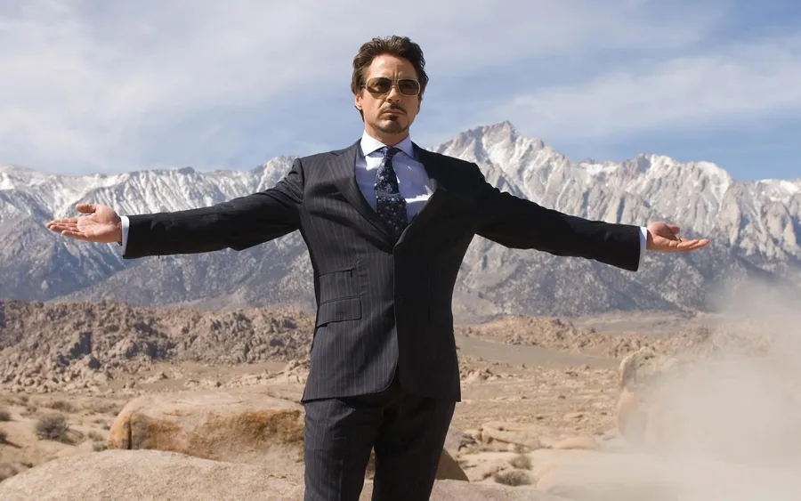
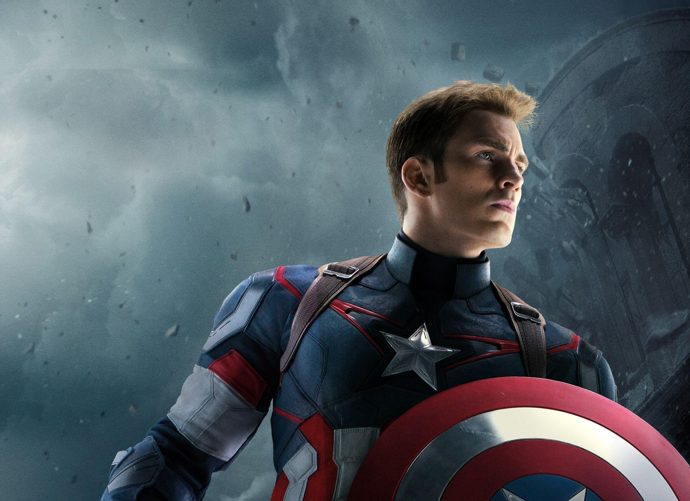
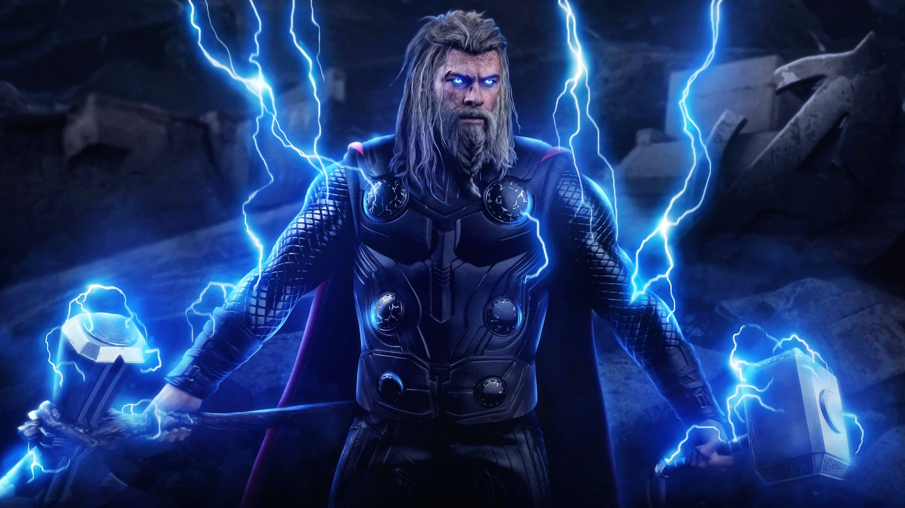
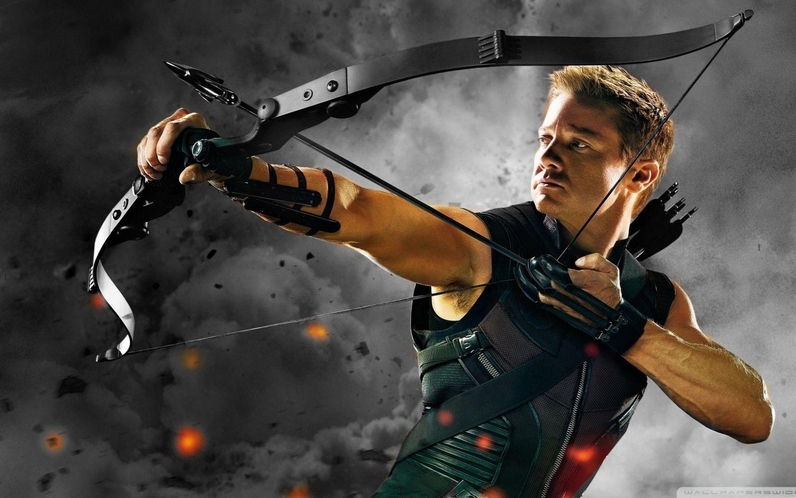
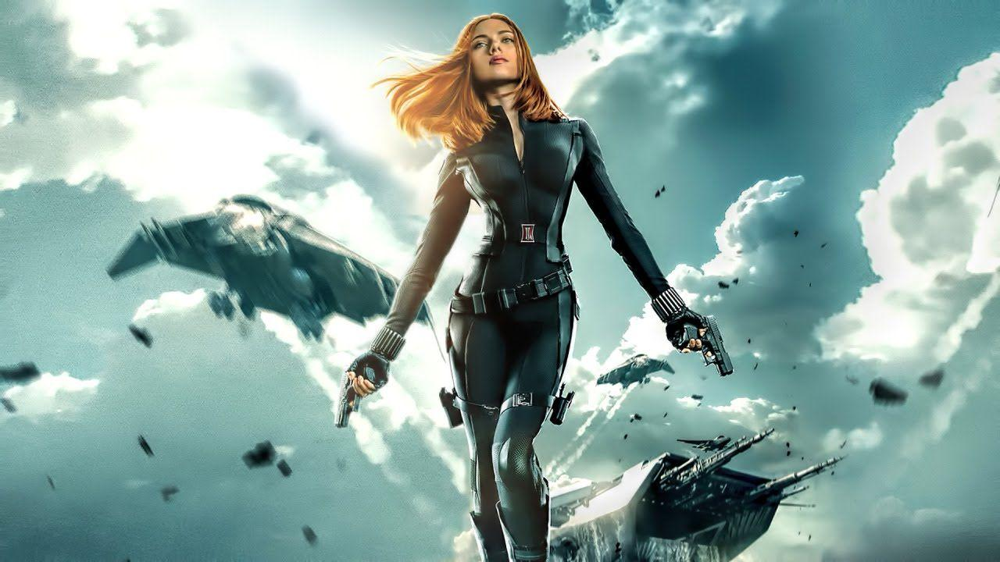
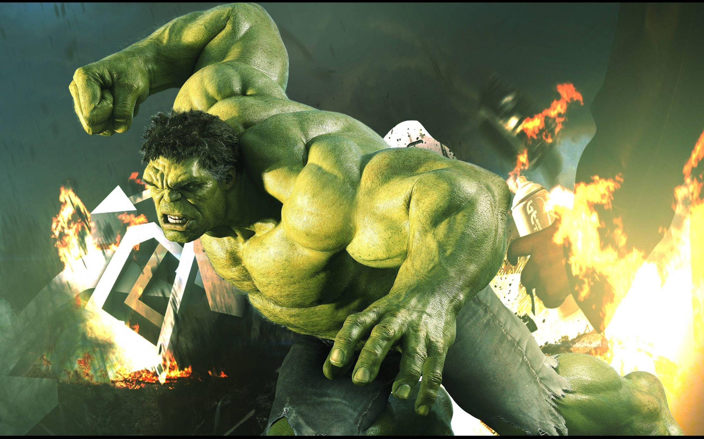

Hi,I'm Tony StarkI think most of you know me as Iron Man. It's funny, when I started out, I was a weapons manufacturer, building the latest and greatest in military technology. I thought I was making the world safer. But, as we all know, sometimes the path to hell is paved with good intentions. One day, my world changed. I saw firsthand the destruction and pain my creations were causing. I realized I had to be more than just a man who made things that went boom. I had to be a force for good, someone who stood up for the innocent, who fought for peace, who wasn't afraid to put himself on the line for others. So, I put on the suit. I became Iron Man. Not because I had to, but because I chose to. I believe that with great power comes great responsibility. It's a mantra I've tried to live by, even when it wasn't easy. Even when it meant facing down gods, aliens, and sometimes, my own demons. Today, as I stand before you, I am reminded of the importance of unity, of working together for the common good. We're all in this together, and if there's one thing I've learned, it's that we are stronger united than divided. We can overcome any obstacle, face any challenge, if we do it together. So, let's build a better future. Let's use our talents, our skills, our hearts, to make the world a better place. Not just for us, but for future generations. Let's be heroes, not because we have to be, but because we choose to be. |
 |
|  |  |
Hi,I'm Captain AmericaWe live in a world where every day, we're faced with challenges, both big and small. It's easy to feel overwhelmed, to think that one person can't make a difference. But I'm here to tell you, that's not true. Each and every one of us has the power to stand up for what's right, to defend those who can't defend themselves, and to strive for a better tomorrow. Courage isn't the absence of fear; it's the will to stand up despite it. We all have fears, doubts, and moments of weakness. But it's in those moments that we have to dig deep and remember what we stand for. Justice, freedom, and equality aren't just ideals—they're commitments we make every day through our actions and our words. It's not about having the strength to fight. It's about having the heart to stand. Together, we can face any adversity, overcome any obstacle, and emerge stronger. Remember, it’s not about where you come from or what you've been through. It's about who you choose to be and the choices you make. So, let's choose to be heroes in our own lives. Let’s fight for each other, stand up for the powerless, and never back down in the face of injustice. We might not have superpowers, but we have something just as powerful—our determination and our unity. Together, we can make this world a better place. I'm proud to stand with you. Let's do this, not just for ourselves, but for future generations. Because together, we are unstoppable. |
Hi,I'm ThorI am Thor, the God of Thunder, son of Odin, and protector of the realms. Today, I stand before you not just as a warrior, but as a guardian of Midgard, our beloved Earth. In these times of uncertainty, it is vital that we remember the strength we each hold within us and the unity that binds us together. Together, we face challenges that test our resolve and our courage. But know this: as long as we stand united, no force can overpower our collective will. Let us embrace our destinies with the valor and wisdom befitting the heroes we are meant to be. With the strength of Mjölnir in my hand and the courage of all of you in my heart, we will forge a future that is bright and just. For Asgard and for Midgard, let us march forward, undaunted and unyielding. |
|  |  |
Hi,I'm HawkeyeI'm Hawkeye. You might know me as an Avenger, but let me tell you a bit about what that means to me. Being an Avenger isn't just about having extraordinary abilities or wielding incredible weapons—although, let's face it, a bow and arrow can be pretty handy. It's about standing up for what's right, even when the odds are against us. It's about teamwork, trust, and the willingness to put ourselves on the line to protect others. I'm just a guy with a bow. No super serum, no high-tech suit, no magical powers. But I've seen firsthand what ordinary people can do when they refuse to back down. I've fought alongside gods, super soldiers, and geniuses, but I've also fought for the everyday person. Because at the end of the day, being an Avenger is about making sure everyone has a shot at a better world. We face incredible threats, and the battles are tough. But we do it because we believe in a future where everyone can be safe and free. That's what it means to be an Avenger. It's about hope, resilience, and never giving up. So here's to all of us—because together, we can make the impossible, possible. |
Hi,I'm Black WidowI’m Black Widow, also known as Natasha Romanoff. I’m an Avenger. You might know me as a highly skilled spy and fighter, someone who has faced incredible odds and made it through the toughest of battles. But being an Avenger isn’t just about fighting. It’s about protecting those who can’t protect themselves. It’s about standing up for what’s right, no matter the cost. We all have a past, and mine isn’t spotless. I’ve made mistakes, and I’ve had to live with them. But being an Avenger has given me a chance to make things right, to use my skills for a greater good. We face challenges that most people can’t even imagine, threats to our world that require extraordinary measures. And we don’t do it alone. Each of us brings something unique to the table, and together, we’re stronger than we could ever be on our own. I’ve seen the worst humanity has to offer, but I’ve also seen the best. And I believe in the good that we can achieve together. So, whether we’re battling an alien invasion or fighting for justice on the streets, we do it with the belief that a better world is possible. |
|  |
Hi,I'm HulkHULK SMASH! HULK STRONGEST THERE IS! HULK HELP FRIENDS! |